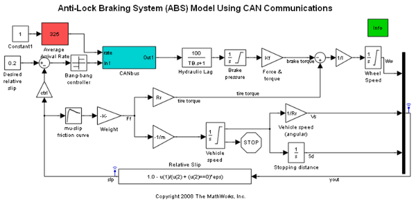
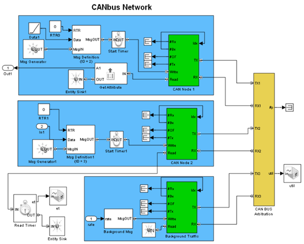

Anti-Lock Braking System (ABS) Model Using CAN Communications
Contents
Overview
This model (Fig 1) extends the Anti-Lock Braking System (ABS) Model with Queuing Delay demo by making the timing uncertainty representative of real-world timing conditions.
Refer to the Design Workflow for an Anti-Lock Braking System (ABS) demo to see where this model fits into the model-based design workflow.
In this model, the delay is primarily a function of traffic on a network that conveys data from the ABS controller and other components. This demo includes a model of a Control Area Network Bus (CANbus) ISO® Standard 11898. To see the modeling of the network, refer to Fig 2.
Fig 1: Anti-Lock Braking System (ABS) Model using CAN Communications
Structure and Behavior of the Network
The CANbus subsystem (Fig 2) includes a shared channel (labeled CAN BUS Arbitration) and multiple nodes that connect to it via TX and RX ports. The bus uses the priority values of simultaneously arriving messages to determine which message to convey.
The middle node generates messages that carry data from the bang-bang controller at the top level of the model. The CAN Node 2 subsystem governs this node's access to the shared channel. The destination of these messages is the top node.
The top node reads data stored in attributes of the messages it receives, and sends the data to the Hydraulic Lag block in the anti-lock braking system.
The top node also generates messages whose destination is the middle node. The Message Delivery Delay plot shows you how long each of these messages takes to arrive at their destination.
The bottom node generates messages that represent traffic from other users of the shared channel. The traffic becomes markedly heavier shortly after T=6.
Fig 2: CAN Bus Network Subsystem
Transmission & Reception in CAN Node Subsystems
Transmission Model
In the top portion of each CAN Node subsystem (Fig 3), a buffer holds messages waiting for transmission. When the transmission of the previous message is complete, the Send to Channel block forwards one copy of the message to the transmitter and keeps another copy until a signal called Ack reports the success or failure of the transmission. If the transmission fails, the copy of the message returns to the transmission buffer for another attempt.
Fig 3: Transmission & Reception
Reception Model
In the bottom portion of each CAN Node subsystem (shown in Fig 3), the Error Detection block checks the source and destination of the received message. A message from this node serves to confirm success of the transmission. A message from another node whose destination is this node advances to one of several mailboxes that represent different clients.
CAN BUS Arbitration Subsystem
The CAN BUS Arbitration subsystem (Fig 4) implements a CSMA/AMP (Carrier Sense Multiple Access with Arbitration by Message Priority) protocol. When the bus becomes free, all nodes that have pending messages send them to the bus. If multiple messages arrive at the same time, the Arbitration on Message Priority block uses their priority values to discard all but the highest priority message. This block also delays the remaining message by the time required to send the message over the bus. After this time elapses, the bus conveys a copy of the delayed message to each node.
Fig 4: CAN BUS Arbitration Subsystem
Results and Displays
Scopes show these simulation results (Fig 5):
- Delay in the delivery of messages from one node to another
- Utilization of the network
- Normalized relative slip of the wheel
- Speed of the vehicle and wheel
Fig 5: Simulation results
You can see that the utilization increases steeply to reflect the heavier background traffic after T=6. The traffic also causes the delay to increase by approximately one order of magnitude after T=6.
Experimenting with the Model
Vary the arrival rate of background traffic on the network by changing the value of the Average Arrival Rate block at the top level of the model. Then observe changes in the plots. In general, increasing the arrival rate causes the network utilization and message delivery delay to increase and causes the performance of the anti-lock braking system to degrade. You might observe changes in performance via differences in the time it takes for the car to stop, and how much the car skids. When the normalized relative slip is 1 and the wheel speed is 0, the car is skidding.
References
[1] Lawrenz, Wolfhard, CAN System Engineering: From Theory to Practical Applications, New York, Springer, 1997.
[2] Voss, Wilfried, A Comprehensible Guide to Controller Area Network, Amherst, MA, Copperhill Technologies, 2005.